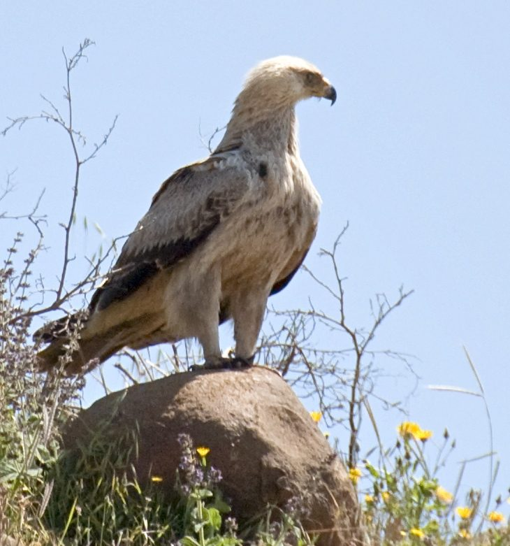

टॉनी ईगलTawny Eagle
Aquila rapax · Accipitridae · BRD-0226

- Scientific name वैज्ञानिक नाम
- Aquila rapax (Temminck, 1828)
- Family कुल
- Accipitridae
- Hindi हिंदी
- टॉनी ईगल
- Local names स्थानीय नाम
- tawny eagle, eagle
- Status here यहाँ की स्थिति
- native
- Movement आवागमन
- Resident, here all year
- Known from कहाँ दर्ज
- Others have published records from the Basti–Ayodhya districts बस्ती–अयोध्या के ज़िलों से दूसरों के प्रकाशित अभिलेख
- IUCN IUCN
- VU
- Review समीक्षा
- audited and independently read
When to look कब देखें
Present all year. साल भर मौजूद।
Uses and possibilities उपयोग और संभावनाएँ
Drawn from the documented uses in the profile below, where each is labelled traditional, current or a research lead. All uses →
Tell it apart from इनसे अलग पहचानें
टॉनी ईगल / Tawny Eagle
Aquila rapax (Temminck, 1828) — Accipitridae
टॉनी ईगल — मध्यम आकार की भूरी चील जो पूरे साल पूर्वी उत्तर प्रदेश में पाई जाती है। इसके हल्के भूरे पंख, पीली आँख और गर्दन के पीछे सुनहरी चमक इसे पहचान देती है। यह खेतों और मैदानों में शिकार करती है, और खरगोश, चूहे और छोटे पक्षी खाती है।
Quick Identification त्वरित पहचान
| Feature | Description |
|---|---|
| Size | Medium large; 65–74 cm long |
| Overall colour | Tawny to dark brown; paler head and neck |
| Eyes | Yellow; piercing gaze |
| Cere and legs | Yellow |
| Tail | Rounded; dark |
| Behaviour | Often perches on high lookouts; soars at moderate heights |
| Flight | Powerful; gliding flight on flattened wings |
Field tip: Medium-sized eagle of open country with uniform brown plumage and a pale head. Yellow eye and yellow cere are diagnostic. Often seen perched on tall trees or utility poles watching for prey. Can be distinguished from larger Steppe Eagles by smaller size and more uniform coloration. Much smaller than .
हिंदी — कैसे पहचानें:
भूरी चील; पीली आँख, हल्की गर्दन।
खुले मैदानों में पेड़ों पर बैठती है।
ऊंचाई पर शिकार के लिए उड़ती है।
खरगोश और चूहे पकड़ती है।
Morphology आकारिकी
Biometrics:
| Measurement | Range |
|---|---|
| Total length | 650–740 mm |
| Wingspan | 1770–2150 mm |
| Wing (flattened chord) | 490–560 mm |
| Tail | 240–290 mm |
| Bill | 45–55 mm |
| Tarsus | 55–70 mm |
| Weight | 2100–2800 g (females larger) |
Size: 65–74 cm long; wingspan 177–215 cm. Weight 2.1–2.8 kg. Females noticeably larger than males (sexual dimorphism).
Plumage: Overall tawny-brown to dark brown. Head and neck noticeably paler, ranging from cream to buff, giving the bird a pale-headed appearance. Flight feathers and tail darker. Underwing coverts paler. Immatures duller and darker overall.
Eyes: Bright yellow; forward-facing, powerful predatory gaze.
Cere and legs: Yellow. Talons large and curved, specialized for grasping prey.
Bill: Hooked at tip, adapted for tearing flesh; yellow at base (cere), dark at tip.
Wings: Long and broad; when soaring, wings held in shallow V or flat profile.
Tail: Wedge-shaped when fanned; rounded when closed; aids in maneuvering.
Sexes: Females 15–20% larger than males; plumage otherwise similar.
Juveniles: Darker overall; streaking on underparts; less contrasting head.
Vocalisations. Call repertoire:
- Territorial call: A high-pitched, far-carrying kyee or kee-ow, given during courtship and territorial soaring.
- Alarm call: Sharp, rapid kip-kip-kip when defending nest.
- Contact call: Softer, croaking notes between pair members.
हिंदी: तेज़ "क्यीह" की आवाज़ करती है, विशेषकर प्रजनन के समय। अलर्ट सिग्नल तेज़ चिल्लाहट।
Behaviour & Ecology व्यवहार और पारिस्थितिकी
Hunting and diet: Tawny Eagles are powerful hunters that take live prey regularly. Prey includes:
- Hare and rabbit
- Rodents (rats, field mice)
- Small to medium snakes
- Small birds
- Occasionally: monitor lizards, agama lizards
- Scavenging: carrion when available
Hunting method: Perch-and-pounce predator. Watches from high vantage points, then swoops down to catch prey. Also hunts on the wing, particularly for birds and bats.
Social behaviour: Territorial and relatively solitary. Pairs establish and defend territories year-round. Roosts solitarily or in pairs on large trees or rocky outcrops.
Soaring: Often soars at moderate heights (500–2000 m), watching for prey movement. Can be seen in loose flocks during migration season in some parts of the range.
Activity pattern: Primarily diurnal hunter; most active in early morning and late afternoon.
Predators: Chicks and eggs vulnerable to larger eagles, monitor lizards, and corvids. Adult Tawny Eagles are apex predators with few natural enemies.
हिंदी: अकेले या जोड़ों में रहती है। अपना क्षेत्र बचाती है। पेड़ों पर बैठकर शिकार के लिए इंतज़ार करती है। तेजी से कूद कर शिकार पकड़ती है।
Life Cycle / Phenology जीवन चक्र
Year-round resident: Tawny Eagles are residents of eastern UP, present throughout the year. They do not migrate out of the region.
Breeding season: March–July. Breeding typically occurs in late winter and spring when prey abundance increases.
Nest and egg-laying: Large stick nest built in large trees (pipal, neem, wild almond) or on rocky outcrops. Usually 1–2 eggs laid per season.
Incubation and fledging: Incubation period approximately 45–50 days; fledging period 60–70 days. Chicks remain dependent on parents for several weeks after fledging.
Courtship: Pair bonding and courtship displays occur January–February, with soaring displays and aerial rolling.
Moult: Prebasic moult occurs July–October; birds are partially flightless for several weeks.
हिंदी: साल भर इसी जगह रहती है। मार्च में प्रजनन शुरू करती है। बड़े पेड़ों पर घोंसला बनाती है। एक या दो अंडे देती है।
Host Plants or Prey आहार
| Food Type | Examples | Hunting Behaviour |
|---|---|---|
| Small mammals | Hare, rabbit, rats, mice | Pounce from perch or flight; fast, accurate strike |
| Reptiles | Snakes (non-venomous), monitor lizards, agama | Catch and kill quickly; swallow whole or tear apart |
| Birds | Partridges, sandgrouse, small birds | Hunt in flight or from perch; pursuit of fleeing prey |
| Carrion | Dead animals, especially during seasons of scarcity | Scavenge; lower priority than live prey |
हिंदी: खरगोश, चूहे, सांप और छोटे पक्षी खाती है। जीवित शिकार पसंद करती है, लेकिन मरे हुए जानवर भी खा लेती है।
Predators / Natural Enemies शत्रु
- Avian predators: Larger eagles may compete for prey or Imperial Eagle may harass on occasion.
- At nest: Monitor lizards, large snakes, corvids (crows, ravens) predate eggs and small chicks.
- Parasites: Blood parasites, intestinal helminths, feather parasites.
हिंदी: बड़ी चीलें इसे धमकाती हैं। सांपों को इसके अंडों का खतरा है। घोंसले में कौवे आ सकते हैं।
Agricultural / Human Relevance कृषि प्रासंगिकता
Protected status: Protected under the Wildlife (Protection) Act 1972. Schedule I status (highest protection). Hunting, capturing, or poisoning is illegal.
Pest control: Tawny Eagles provide valuable pest control services by hunting rodents and small birds in agricultural areas. A single pair may consume hundreds of rodents and thousands of insects annually, indirectly benefiting crop production.
Conflicts with humans: Occasionally take small poultry (chicks, young guinea fowl) if available, but preference is for wild prey. Losses to poultry are negligible in the region.
Cultural significance: Featured in classical Sanskrit and Persian literature as a symbol of nobility and courage.
Conservation concern: The species is Vulnerable (VU) globally due to habitat loss, persecution (particularly illegal poisoning), and collision with utility wires and wind turbines in parts of its range.
हिंदी: यह विधि अधिनियम 1972 की अंतर्गत सर्वोच्च सुरक्षा प्राप्त है। खेतों में कीटों को नियंत्रित करती है। इसे मारना या जहर देना अपराध है।
Expected Locally स्थानीय रूप से अपेक्षित
Not a field record. Written from published accounts for eastern Uttar Pradesh. No confirmed local sighting yet — if you have seen it, that is what the atlas needs.
अभी तक स्थानीय पुष्टि नहीं। यह विवरण प्रकाशित स्रोतों से है, किसी अवलोकन से नहीं।
This species is NOT a field record. The distribution below is based on published sources describing where Tawny Eagle should be looked for in the Basti–Ayodhya region and where it has been documented by ornithologists in published surveys.
Year-round range: Expected in eastern Uttar Pradesh throughout the year on open plains, cultivated fields, and areas with scattered large trees suitable for nesting.
Habitat preference: Open to semi-open country with large trees for nesting and perching. Avoids dense forests. Agricultural areas with mixed habitats are preferred.
Breeding season: Particularly conspicuous during March–June when pairs engage in courtship displays and territorial calling.
Peak visibility: February–March (courtship) and June–July (fledging of young).
Published records: GBIF holds published records from these districts.
What a first record would be: A dated photograph or detailed observation showing the bird in a specific location (with GPS coordinates and date) submitted through the About page. Nest locations with breeding evidence would be particularly valuable.
हिंदी: यह पक्षी साल भर यहाँ पाया जाना चाहिए। खेतों और बड़े पेड़ों के पास देखें। प्रजनन के समय इसे सुनना आसान है।
Distribution वितरण
Global range: Breeds across Africa, the Middle East, central Asia, and Indian subcontinent. Several subspecies recognized; A. r. rapax occurs in India and the western Palearctic. Resident and partial migrant in different parts of range.
In India: Occurs across most of the Indian subcontinent with several subspecies; primarily in open and semi-open habitats.
In Uttar Pradesh: Resident and breeding species across the state, particularly in open plains and agricultural areas.
In Basti district / eastern UP: Resident throughout the year; breeds locally on large trees in cultivated areas and near villages.
Research Questions शोध प्रश्न
- What is the home range size and territory defense behaviour of resident Tawny Eagles in eastern UP? Do pairs maintain the same territories from year to year?
- How does diet composition change seasonally, and what is the relative proportion of live prey vs. carrion in the annual diet?
- क्या इस चील की संख्या में पिछली दो दशकों में कोई परिवर्तन हुआ है?
- What impacts does illegal poisoning (pesticide residues, rodenticide toxicity) have on Tawny Eagle populations?
- How successful are breeding attempts, and what factors (weather, prey availability, human disturbance) influence breeding success? (A child can locate active nests and count fledglings produced.)
- क्या इस चील के शिकार की अनुकूलता (परिपक्वता में कितने दिन लगते हैं) को आहार और जलवायु से संबंध है?
Similar Species मिलती-जुलती प्रजातियाँ
| Species | Key Difference | Hindi | Field Rule | |
|---|---|---|---|---|
| [[steppe_eagle\ | Steppe Eagle]] (Aquila nipalensis) | Larger (75–85 cm); darker overall; golden nape patch | स्टेप चील | Steppe is larger and darker; Tawny is smaller and more uniform tawny-brown. |
| Golden eagle (Aquila chrysaetos) | Much larger (76–102 cm); darker; golden crown visible | टॉनी ईगल | Golden eagle is much larger with distinctive golden-brown crown. | |
| Eastern Imperial Eagle (Aquila heliaca) | Larger (72–81 cm); darker; pale shoulder patches | साम्राज्य चील | Imperial has pale patches on shoulders and back; Tawny lacks these. | |
| [[indian_spotted_eagle\ | Indian Spotted Eagle]] (Clanga hastata) | Smaller, darker; heavily spotted below; white spots on back | धब्बेदार चील | Spotted Eagle has diagnostic white spots and barring on underparts. |
Field rule: Tawny Eagle is medium-sized with uniform tawny-brown plumage and pale head. If the bird is much larger, darker, or shows golden crown, it is a different species. The pale head contrasting with brown body is diagnostic.
Taxonomy & Classification वर्गीकरण
Original description. The species was described by Coenraad Jacob Temminck in 1828 in Planches Coloriées d'Oiseaux. Type locality not clearly specified in original description; presumed to be from the Indian subcontinent.
Subspecies. Multiple subspecies recognized across the African and Asian range:
- A. r. rapax Temminck, 1828 — India to western Asia (occurs in UP)
- A. r. belisarius (Levaillant, 1850) — Africa
- A. r. nipalensis (Hodgson, 1836) — sometimes treated as separate species
Family and order placement. Order Accipitriformes; family Accipitridae (eagles, hawks, vultures). The genus Aquila comprises the "true" or "booted" eagles, characterized by feathering to the toes.
Phylogenetic notes. Molecular work places Aquila rapax within a clade including the Steppe Eagle and other open-country Aquila species. Historically confused with the Steppe Eagle, but molecular data support their specific distinctness.
IUCN status rationale. The species is assessed as Vulnerable (VU) globally due to habitat loss, persecution (particularly poisoning), and documented declines in parts of its range. In India, populations are still relatively widespread but face threats from pesticide use, rodenticide accumulation in food chains, and illegal persecution. Long-term population trends are poorly known.
हिंदी: यह चील विश्व के कई भागों में पाई जाती है। भारत में इसकी संख्या घट रही है। जहर और दवाओं से खतरा है।
Photo Gallery फोटो गैलरी
No photos yet — add field photos to media/species/tawny_eagle/ and run node scripts/sync_photos.js.
Wanted photos:
- Adult perched on high vantage point
- In flight showing wing pattern
- Head detail showing yellow eye and cere
- Soaring display
- Pair during courtship
- Nest with eggs or young
References संदर्भ
- Temminck, C. J. (1828). Planches Coloriées d'Oiseaux. Livraison 52, Paris.
- Ali, S. & Ripley, S. D. (1968). Handbook of the Birds of India and Pakistan. Vol. 1 (Divers to Hawks). Oxford University Press, Delhi. Pp. 215–217.
- Cramp, S. & Simmons, K. E. L. (1980). Handbook of the Birds of Europe, the Middle East and North Africa: The Birds of the Western Palearctic. Vol. 2 (Hawks to Bustards). Oxford University Press. Pp. 137–145.
- Mishra, H., Kumar, V. & Kumar, A. (2019). Population structure and habitat utilization of migratory birds at Bakhira Bird Sanctuary, Uttar Pradesh, India. Pakistan Journal of Zoology 52(1): 247–254.
- Bisht, R. et al. (2015). Raptor assemblages in the Brahmaputra Valley: Diversity, distribution and conservation implications. Journal of Threatened Taxa 7(8): 7496–7512.
- GBIF Occurrence Data — Aquila rapax, India. GBIF taxon key: [to be filled].
- IUCN Red List (2024). Aquila rapax — BirdLife International assessment. IUCN, Cambridge. Status: Vulnerable.
Source file: species/fauna/birds/tawny_eagle.md